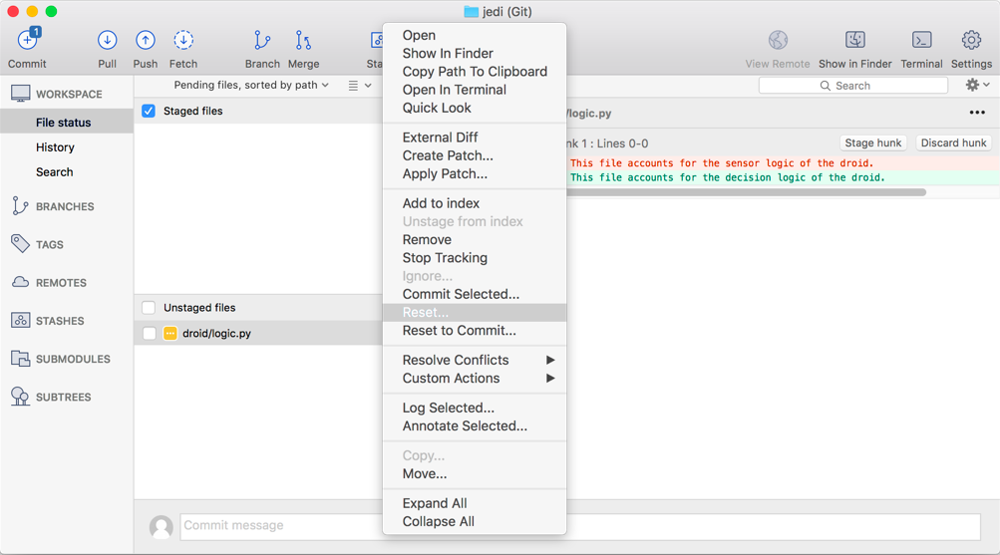

Basic Commands: SourceTree
This section aims to provide a solid foundation for the basic commands required to use Git. To understand the applicability of the basic commands, this tutorial will follow a scenario.
You may press ESC at any point to view an overview of the tutorial. Note the arrow(s) in the bottom-right corner that controls navigation through the lesson.
Types of Repository Storage
There are two ways a Git repository can be stored and managed: locally on a personal computer or remotely on a server. Storing remotely permits distributed teamwork. It is worth noting that a locally stored repository can be moved to a server if desired.

Local Computer

Remote Server
Let's first consider local storage.
Creating a Local Repository
To create a local repository using SourceTree, go to the "Local" tab and select
New... > Create Local Repository
Creating a Local Repository
Specify the destination folder for the new repository.
This path should NOT be your home folder. The path should be the specific directory location of the desired repository. This may require you create a directory, if one does not exist.
Creating a Local Repository
You can now see the new repository in the list.
In SourceTree, you can double-click to view it.
Viewing Local Repository
This is the initial view you will have of your empty repository.
Let’s start adding files!

Adding a File
To add a file, you’ll need to open either a Finder (Mac) or Explorer (Windows) window or use the command
line to create a file. Creating files is NOT done in SourceTree.
Let’s add some fake files as an example.
Viewing Local Changes
Here we've added a directory ("droid") for software used in developing dummy droids for Jedi training. Inside the directory is a file and a subdirectory with a file.
Let’s analyze the relevant new pieces here.

Viewing Local Changes
In the upper left, we can see that the “Commit” button has the number ”2” above it.
This is because SourceTree sees two new files.
Viewing Local Changes
We can also see the files that have been added or changed.

Viewing Local Changes
For each file we can view the files contents.

Viewing Local Changes
To understand a little better the process of committing new files in Git, let’s first change the view of the pending files. Select the four horizontal bars, as shown here. Currently we have ”No staging” selected. Let’s select “Split view staging”.
Viewing Local Changes
This configuration helps us see which files are staged for commit.
Let's talk about what "staging" means! Click the right arrow.

Staging Changes
Staging refers to a state between making changes and committing them to a repository.
Basic Git Phases
Unstaged < --- > Staged ---- > Committed
(2-way) (1-way)
While there are ways to go straight from file changes to committing without staging, it is best practice to stage files prior to committing them. It's also worth noting that files can be staged and unstaged, but once you commit, you cannot undo. (Well, technically you can, but it’s not as straight forward and is covered in more advanced topics.)
Staging Files
To stage the files we’ve added to the repository, you can either drag-and-drop the files from the “Unstaged files” section to the “Staged files” section or select the checkboxes next to the files themselves.

Staging Files
Here we can see the newly staged files. You may notice that their icons have changed. Previously the icon was a question mark, indicating it was an untracked file. Here it is a plus sign, indicating it is a newly-added file.
SourceTree Icon Cheat Sheet
This is a cheat sheet for SourceTree icon definitions.
Committing Changes
Now that we've staged the files we want to commit, select the "Commit" button.
Committing Changes
Now that we’ve selected “Commit”, we must add a message to describe the changes.

Committing Changes
Following Good Practices
It is good practice to provide a descriptive message, even if it just describes the files you added. If there was a purpose to a file change or addition, it’s good to put that in there too. Do NOT simply type “Nothing” as the commit message. This is NOT useful to other team members, as they cannot determine the general changes you made by viewing the commit message.
Be a good developer and communicate the intent of your work.
Committing Changes
Now that we’ve added a message and hit “Commit”, we see this screen.
What is this screen telling us?
It is telling us that there have been no changes to our repository since the last commit we made.
Let’s view the history of the commits now. Select the “History” item under “Workspace”
Viewing Commit History
Here we can see the commit history of our repo. Notice the most recent commit we just made.

Resetting Changes
Now let’s talk about resetting changes. Here we have modified the logic.py file. We can see the details of the change on the right-hand side. The lines in red represent the old lines, whereas the lines in green represent the new lines. We can also see the change in icon to a gold ellipsis.

Resetting Changes
To reset the changes made to this file, right-click on the file within SourceTree and select “Reset…”. Note that we also see “Reset to Commit…”. This latter option is only useful if we want to reset the file to some commit further back in history, not immediately previous to your current state. You will likely receive a prompt asking you if you are sure you want to do this. If you are, select "Yes." In this case, you'll return to the empty File Status screen.

Let's now consider working with a remote server.